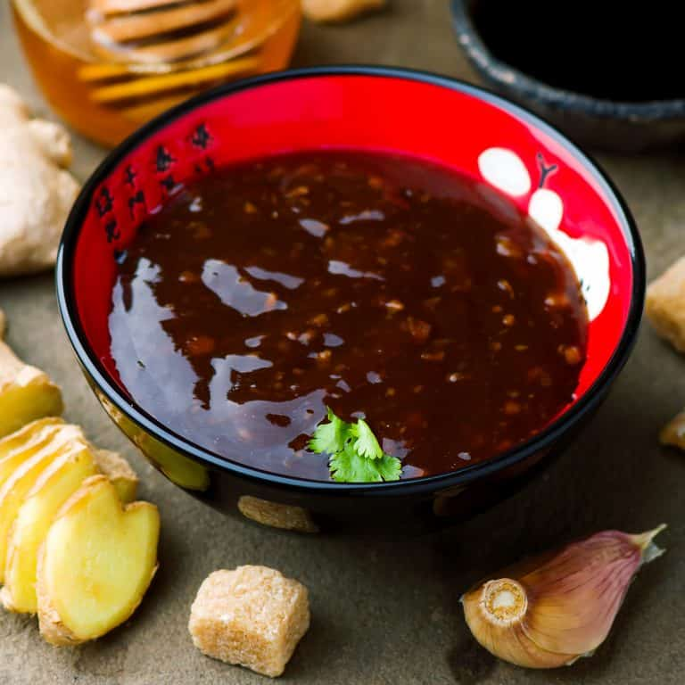

Teriyaki Sauce

Good with Chicken (trust me)
Ingrendients
- 1 cup water
- 1/4 cup soy sauce
- 5 teaspoons packed brown sugar
- 1 tablespoon honey
- 1/2 teaspoon ground ginger
- 1/4 teaspoon garlic powder
- 2 tablespoons cornstarch
- 1/4 cup cold water
Steps
- Combine 1 cup water, soy sauce, brown sugar, honey, ginger, and garlic powder in a saucepan over medium heat. Cook until nearly heated through, about 1 minute.
- Mix cornstarch and 1/4 cold water together in a cup; stir until dissolved. Add to the saucepan. Cook and stir sauce until thickened, 5 to 7 minutes.